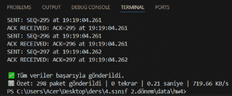
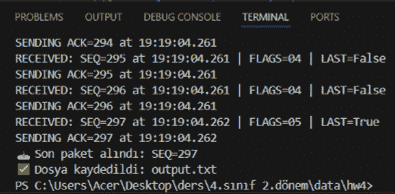

ReDaP: Reliable Datagram Protocol Design & Implementation
ReDaP is a lightweight, reliable transport layer protocol built on top of UDP, designed to bridge the gap between the speed of connectionless protocols and the reliability of TCP. This project involved defining a custom RFC (Request for Comments) specification and implementing a complete Sender/Receiver architecture in Python. The protocol is optimized for experimental and real-time applications where low overhead is critical, but data integrity must be guaranteed.
Technical Architecture & Protocol Specifications
- Reliability Mechanism: Implemented a Stop-and-Wait ARQ (Automatic Repeat Request) mechanism, ensuring that only one unacknowledged data packet is in flight at any time to prevent data loss.
- Error Detection: Developed a 16-bit one’s complement checksum algorithm that validates data integrity at the word level; corrupted packets are automatically discarded and triggered for retransmission via NACK or timeout.
- Packet Structure: Designed a custom 10-byte fixed header comprising Message Type (DATA, ACK, NACK), Flags (LAST, RETRANSMIT), Sequence Numbers, and Checksum fields.
- Sequencing & Flow: Utilized 16-bit sequence numbers to handle packet ordering and wrap-around logic, allowing for the reliable transmission of large files by splitting them into 512-byte payload chunks.
- Dynamic Retransmission: Engineered a timeout-based system (suggested at 500ms) with a maximum retry limit (5 retries) to handle network congestion or packet drops effectively.


Software Implementation (Python)
- Socket Programming: Developed asynchronous communication scripts using Python’s socket and struct libraries to handle raw UDP datagrams and binary header packing/unpacking.
- Performance Metrics: The implementation tracks and reports real-time statistics, including throughput (KB/s), retransmission counts, and total elapsed time to evaluate network efficiency.
- User Interface: Integrated a tkinter file-dialog system in the Sender module to allow seamless selection and transmission of any file type across the ReDaP network.